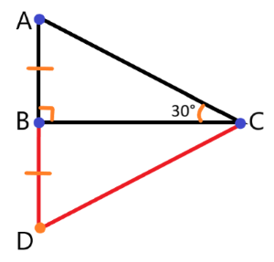

Определение 31:
Гипотенуза — сторона прямоугольного треугольника, лежащая напротив прямого угла.
Определение 32:
Катеты — стороны прямоугольного треугольника, образующие прямой угол.
Теорема 54:
В прямоугольном треугольнике гипотенуза всегда больше каждого из катетов,
а сумма длин двух катетов всегда больше гипотенузы.
Теорема 55:
Катет, лежащий напротив угла в 30°, равен половине гипотенузы.

Рис. 29 к теореме 55 и её обоснованию.
Обоснование теоремыДано: △ABC — прямоугольный; ∠ABC = 90°; ∠BCA = 30°.Доказать: AB = 0,5 * AC.Доказательство:Сделаем дополнительное построение: Продолжим прямую AB и отметим на ней точку D так, чтобы AB = BD.1. Рассмотрим △ABC и △DBC:● AB = BD — по построению.● Сторона BC — общая.● ∠ABC и ∠DBC — смежные. Значит, ∠DBC = 180° - ∠ABC = 180° - 90° = 90°.Из пунктов выше следует, что △ABC = △DBC (по двум сторонам и углу между ними).2. Из равенства треугольников следует, что ∠DCB = ∠ACB = 30°, то есть ∠ACD = 60°.Так как сумма углов треугольника равна 180°, то ∠BAC + ∠BDC = 180° - ∠ACD = 180° - 60° = 120°. Так как △ABC = △DBC, то AC = DC, а значит ∠BAC = ∠BDC = 60°. Получается, что △ACD — равносторонний.3. По построению AB = BD, то есть AB = 0,5 * AD. Так как AC = AD, то AB = 0,5 * AC, что и требовалось доказать.Теорема 56 (обратная к Теореме 55):
Если катет прямоугольного треугольника равен половине гипотенузы, то угол, лежащий напротив этого катета, равен 30°.
Признаки равенства прямоугольных треугольников
Теорема 57 (по двум катетам):
Если катеты одного прямоугольного треугольника соответственно равны катетам другого прямоугольного треугольника, то такие треугольники равны.
Теорема 58 (по гипотенузе и катету):
Если гипотенуза и катет одного прямоугольного треугольника соответственно равны гипотенузе и катету другого прямоугольного треугольника, то такие треугольники равны.
Теорема 59 (по катету и прилежащему острому углу):
Если катет и прилежащий острый угол одного прямоугольного треугольника соответственно равны катету и прилежащему острому углу другого прямоугольного треугольника, то такие треугольники равны.
Теорема 60 (по катету и противолежащему острому углу):
Если катет и противолежащий острый угол одного прямоугольного треугольника соответственно равны катету и противолежащему острому углу другого прямоугольного треугольника, то такие треугольники равны.
Теорема 61 (по гипотенузе и острому углу):
Если гипотенуза и острый угол прямоугольного треугольника соответственно равны гипотенузе и острому углу другого прямоугольного треугольника, то такие треугольники равны.